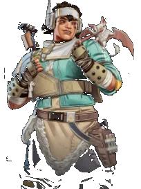

ヴァンテージのアップグレードと能力まとめ

能力（パッシブ・戦術・アルティメット）
パッシブスポッターレンズ
サイトを覗いて敵の体力バーとチームシールドレベルを確認してください。遠くの複数のターゲットを追跡するためにピンを使用します。中距離から長距離のスコープは、弾道落下の指標を表示し、弾がどこに着弾するかを確認できます。
戦術エコー配置
翼を持つ相棒の「エコー」を配置し、その位置へ飛ぶ。エコーの方を向いていないと飛べない。エコーのもとに到達するとダブルジャンプでき、しゃがみでジャンプを中断できる。
アルティメットスナイパーのマーク
カスタムスナイパーライフルを使って敵のターゲットをマークすると、自分とチームにダメージボーナスが適用される。射撃すると、エイム時に短時間ターゲットレーザーが有効化する。
確認日：2026/09/28 出典（EA 公式）
アップグレード（レベル2・3）
Lv2
確認日：2026/09/29
強化・弱体化の履歴
今シーズンの調整はありません。